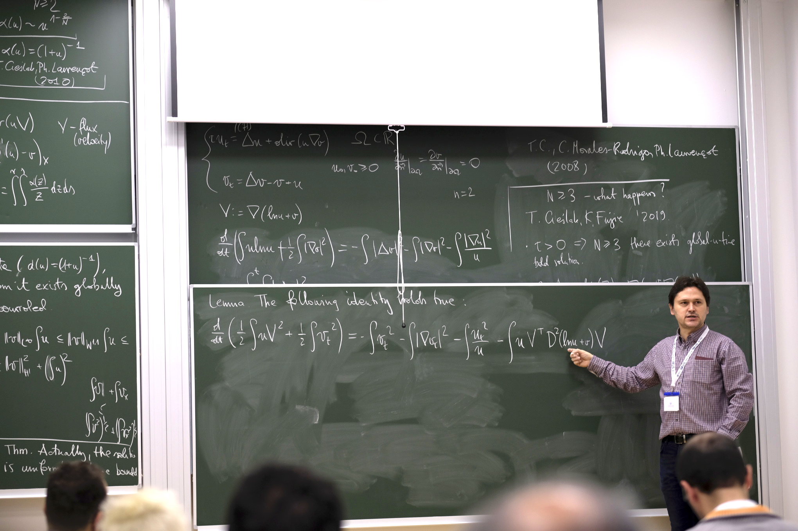
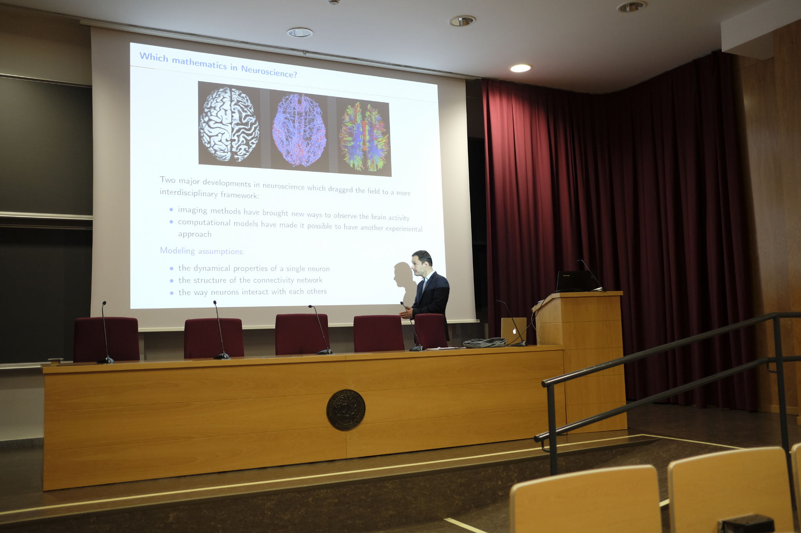
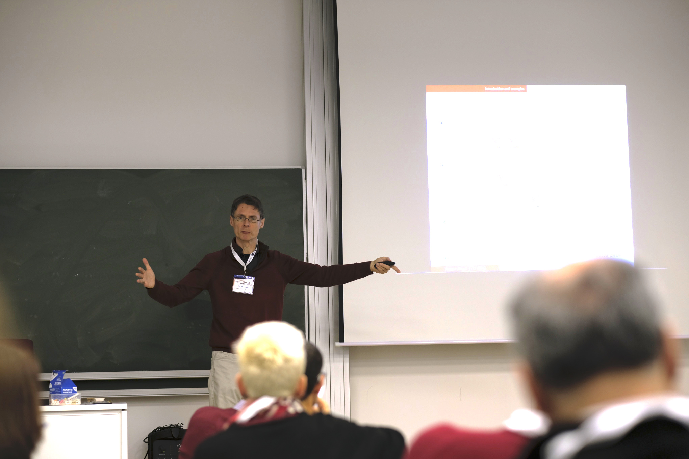
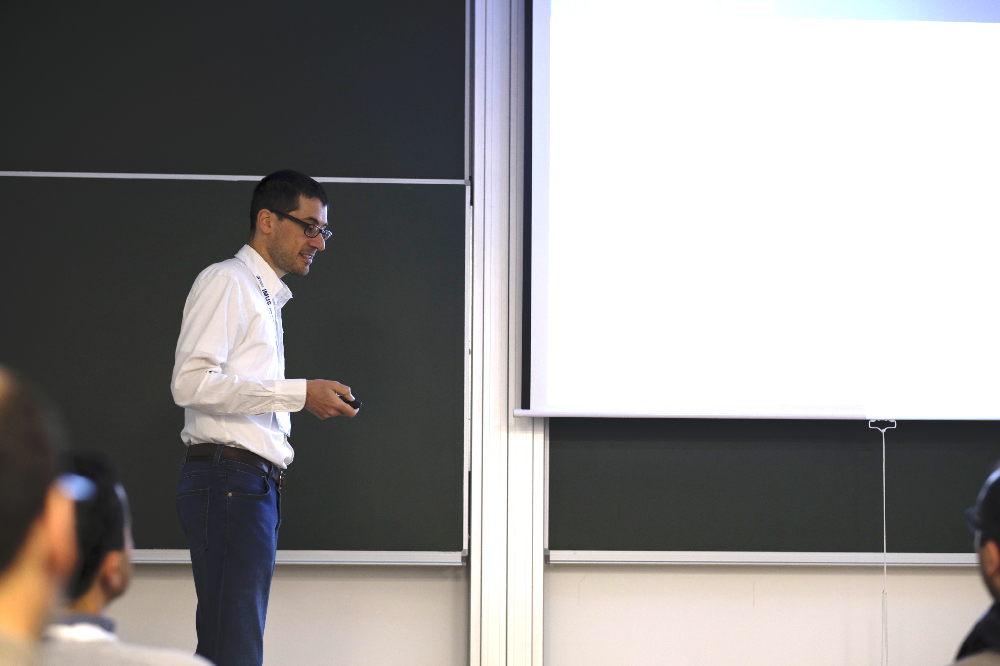
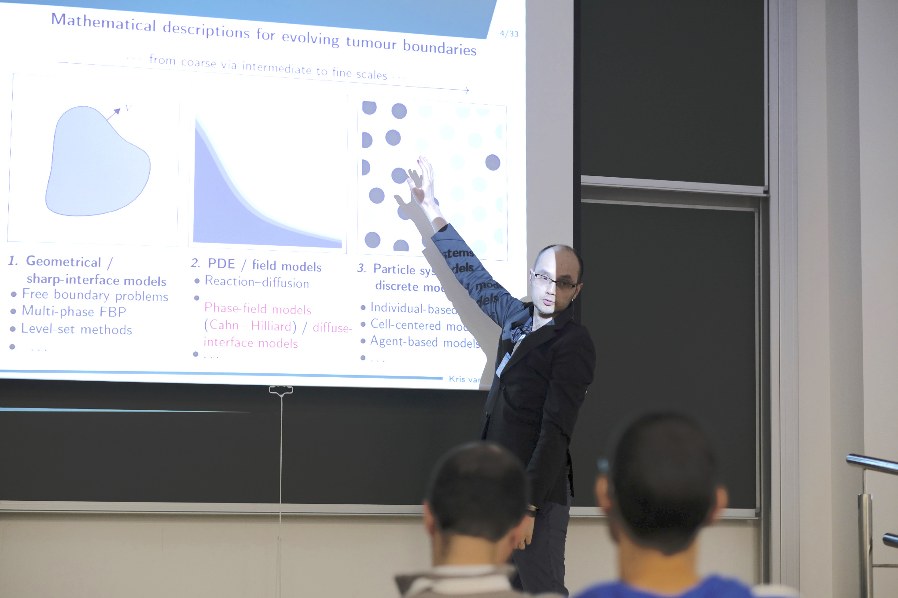
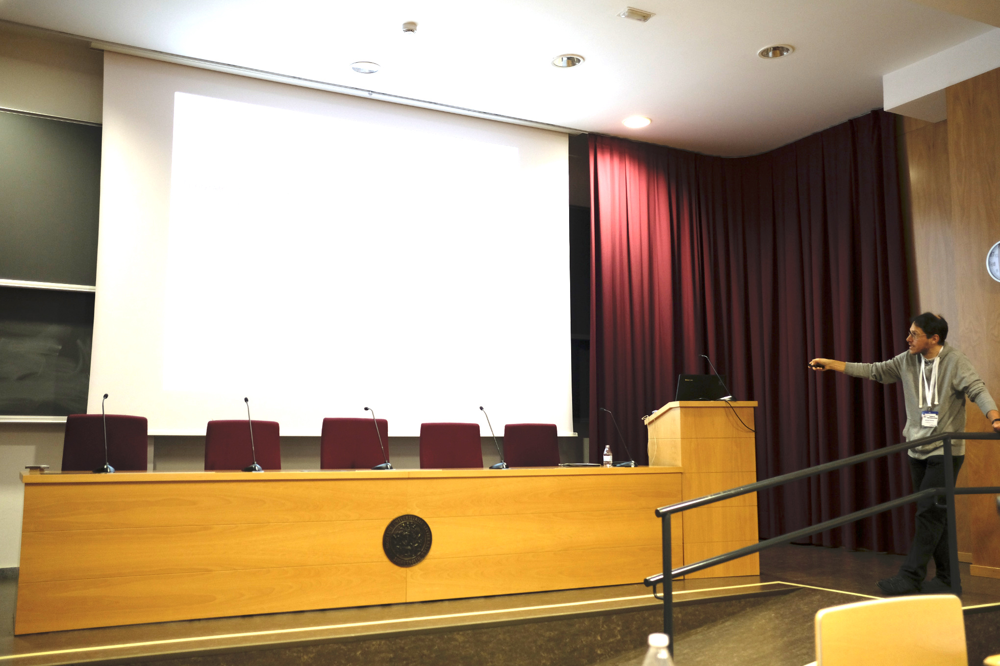
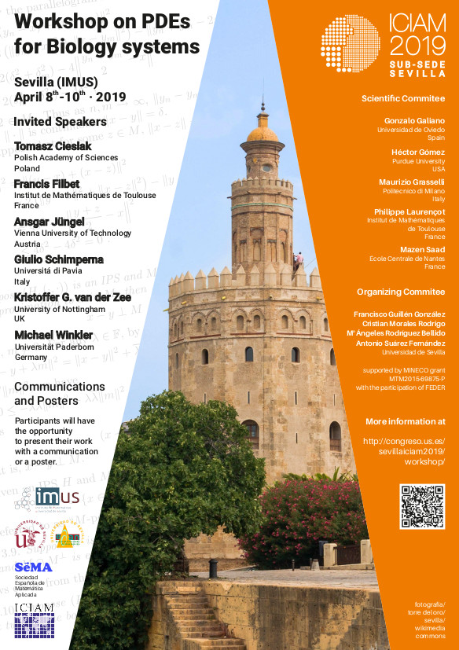

F. Guillén González, C. Morales Rodrigo,
M.A. Rodríguez Bellido y A. Suárez Fernández
Dpto. Ecuaciones Diferenciales y Análisis Numérico
Universidad de Sevilla
http://congreso.us.es/sevillaiciam2019/workshop/
_____________________________________
Dentro de los eventos satélite de ICIAM2019, del 8 al 10 de abril de 2019 se celebró en las instalaciones del Instituto de Matemáticas de la Universidad de Sevilla (IMUS) el Workshop on PDEs for Biology Systems.
Dicho workshop fue un punto de encuentro en el que se presentaron algunos de los últimos avances científicos en el campo de la Matemática Aplicada en relación con modelos de Ecuaciones en Derivadas Parciales (EDPs) que sirven para analizar el comportamiento de sistemas de organismos vivos, y en el que los investigadores compartieron conocimientos en dichos temas desde diferentes puntos de vista: teórico, de análisis numérico, simulaciones y control óptimo.
Para ello, contamos con la presencia de seis conferenciantes invitados, catorce comunicaciones y tres pósteres, además de la asistencia de alumnos de doctorado e investigadores de Alemania, Austria, Polonia, Francia, Reino Unido y España.
El contenido de las conferencias invitadas fue el siguiente:
 
(a) Izquierda, Tomasz Cieslak. Derecha, Francis Filbet
 
(b) Izquierda, Ansgar Jungel. Derecha, Giulio Schimperna
 
(c) Izquierda, Kristoffer van der Zee. Derecha, Michael Winkler
Figura 10
Conferenciantes Invitados al Workshops on PDEs for Biology Systems. Fotos de
Cristian Morales Rodrigo.
Entre las comunicaciones y póster podemos encontrar diferentes resultados sobre modelos de quimiotaxis (y taxis, en general), cáncer, glioblastoma, fluidos bioconvectivos, problemas inversos para técnicas de imágenes médicas, estructuras dinámicas para modelos de conciencia, problema del quemostato, elastografía, y ecuaciones degeneradas con drift-diffusion.
Agradecemos la financiación a la Universidad de Sevilla, en especial al IMUS, al Dpto. Ecuaciones Diferenciales y Análisis Numérico, y al Proyecto MTM2015-69875-P «Problemas de Difusión, Reacción y Campo de Fases aplicados a Modelos de Organismos Vivos».
